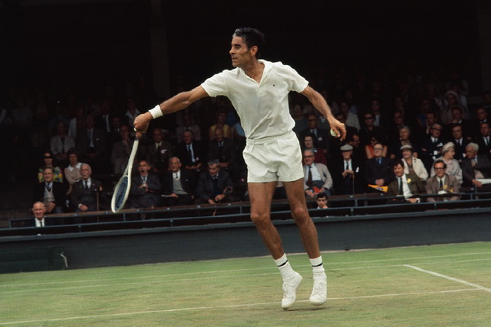

june-26-1969 Pancho Gonzales edges Pasarell in 5 hours and 20 minutes
- 1949 - he won the us open for the first time.
- 1949 - he won his second us open.
- 1950 - he started his profesional tennis career and because of this
he couldn't compete in grand slam tournaments for 18 years. - 1952 - he was the No. 1 professional tennis player from 1952 to 1960.
- 1969 - with 41 years he won the longest tennis match to date.
- 1973 - he retired from tennis with a total of 113 titles won.